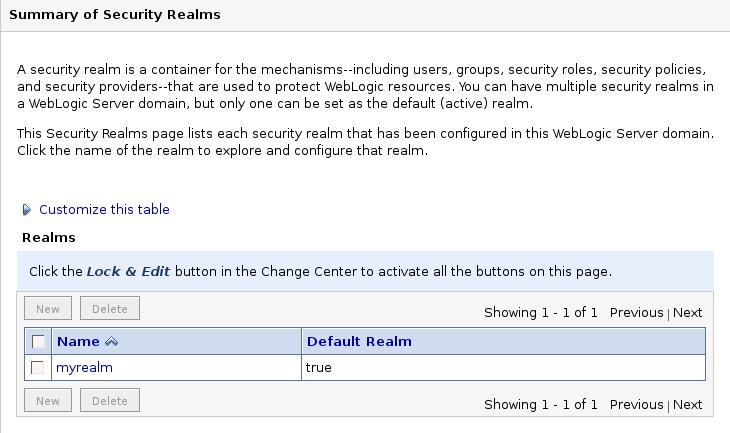
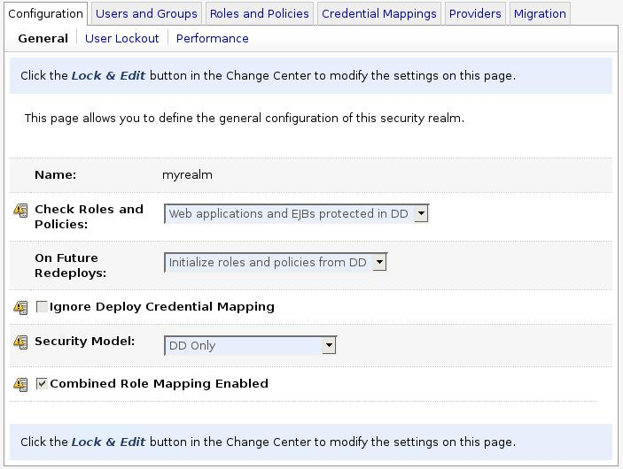
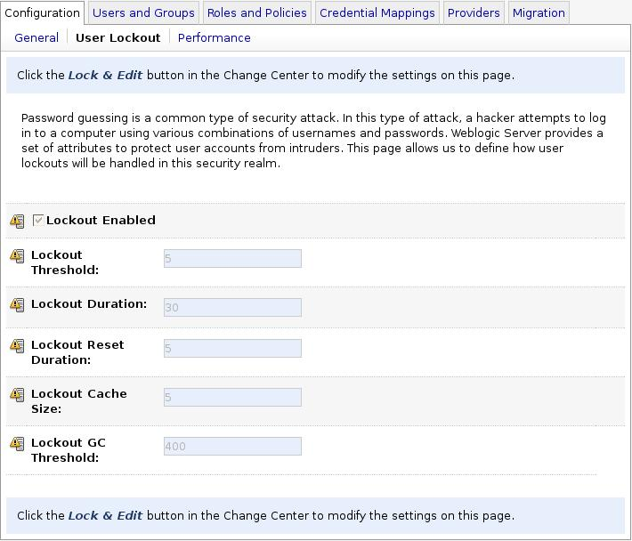
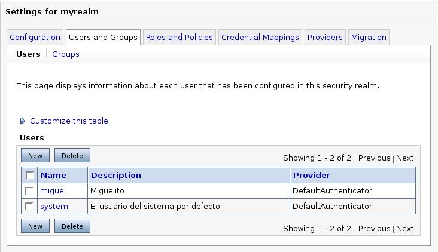
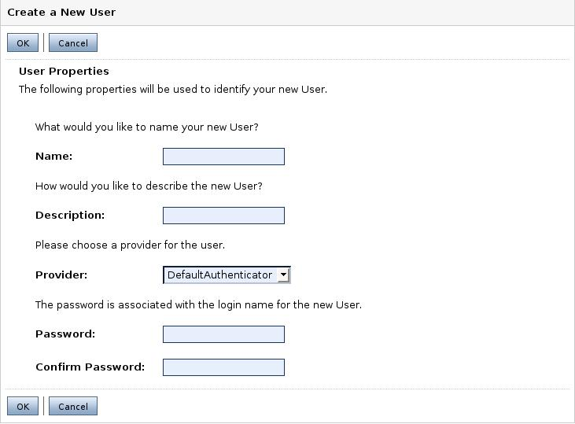
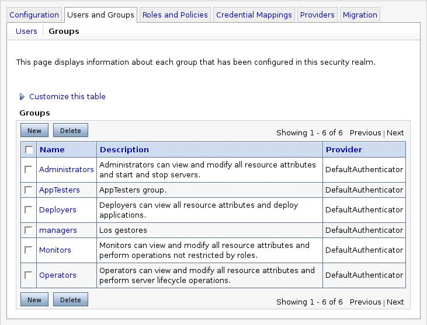
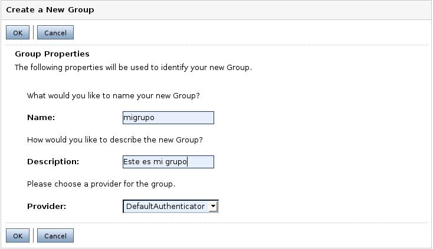
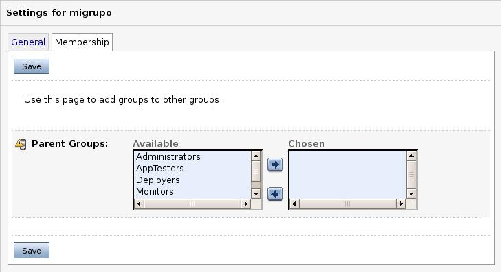
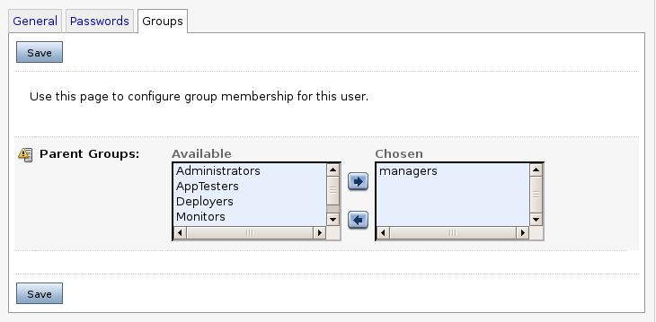
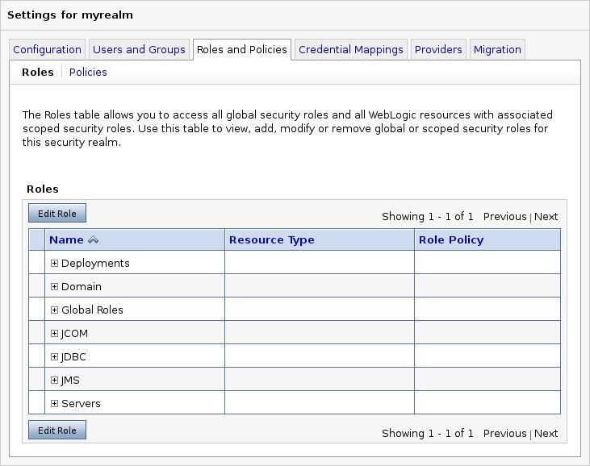

Gestión de seguridad
Gestión de seguridad
WebLogic proporciona una gestión de seguridad por defecto. Incorpora los mecanismos básicos de autentificación (comprobar que el usuario y contraseña que estamos introduciendo son correctas) y autorización (una vez autentificado se debe comprobar si el usuario en cuestión tiene permisos para realizar una determinada acción: acceder a un servlet, modificar algún elemento del dominio, ejecutar una aplicación, etc.). Sin embargo, esta gestión puede ser llevada a cabo por sistemas externos (el propio sistema operativo, sistema LDAP, etc.) En esta sesión vamos a proceder a comentar cómo podemos crear los mecanimos de autentificación y autorización en su forma por defecto.
Debemos dividir el proceso para proporcionar seguridad en varios pasos:
- Cuando desarrollemos una aplicación, no tenemos que pensar en qué usuarios del sistema donde vayamos a desplegar la aplicación van a usarla. Es posible que lo desconozcamos o que la aplicación vaya a desplegarse en varios sistemas distintos. La forma más eficaz de trabajar es crear restricciones en la aplicación (lo veremos más adelante en esta misma sesión). Esto se hace creando roles de seguridad asociados a patrones URL en el descriptor de la aplicación (web.xml).
- Por otro lado, nuestro sistema (en nuestro caso WebLogic) tendrá creados usuarios, grupos y roles (los llamaremos principales) que se podrán gestionar de manera distinta.
- El paso final consiste en mapear restricciones en el descriptor con principales del servidor. En el caso de WebLogic esto se hace con un fichero descriptor adicional llamado weblogic.xml. De esta manera, nuestra aplicación es independiente del servidor donde vayamos a desplegar.
Configuración general
En la opción Security Realms de la izquierda tenemos todo lo referente a la gestión de seguridad. Tenemos creado un Realm por defecto, myrealm. Un Realm es un conjunto de usuarios, grupos, roles, proveedores y políticas de seguridad. Podemos crear nuevos usuarios, grupos y roles. En Weblogic 9.0 la seguridad se maneja mediante políticas de seguridad. Las políticas de seguridad permiten definir quién tiene acceso a un determinado recurso. Adicionalmente podemos definir una restricción de tiempo de acceso a un recurso (de qué hora a qué hora se tiene acceso a un recurso). Por defecto un recurso no tiene protección hasta que el administrador le asigna una determinada política de seguridad. Los recursos a los que se pueden imponer políticas de seguridad son: la consola de administración, recursos de aplicación (web, EJB, ear, jar, etc.), JDBC, JNDI, EIS, JMS.

Vamos a empezar a definir la seguridad. Pinchamos en myrealm, que es el definido por defecto, y nos aparecerá la siguiente ventana. En ella podemos configurar si la política de seguridad vendrá dada por el descriptor de despliegue (DD) o bien la gestionará el propio servidor.

La opción Configuration->User Lockout tiene que ver con características de la contraseña de acceso y el bloqueo de una cuenta por haber intentado acceder con una contraseña incorrecta. Si un usuario intenta acceder al sistema e introduce una contraseña incorrecta, cuando realice un determinado número de intentos la cuenta será deshabilitada. Las opciones son:
- La opción Lockout enabled, si marcada, permite el bloqueo de una cuenta al intentar acceder con una contraseña errónea.
- La opción Lockout Threshold especifica el número de intentos erróneos que provocan el bloqueo de la cuenta.
- La siguiente es el número de minutos que se bloquea la cuenta.
- La opción Lockout Reset Duration indica el número de minutos durante los cuales se cuenta el número de intentos fallidos. Si marcamos cinco, si durante cinco minutos se han realizado cinco (el número indicado por Lockout Threshold) intentos fallidos, se produce el bloqueo.
- La última opción es el tamaño de la cache de intentos fallidos de cualquier usuario que el sistema almacenará.

Gestión de usuarios y grupos
Vamos a ver cómo crear un nuevo usuario. Un usuario puede ser una persona o una entidad software (cliente java). El usuario es único dentro del sistema y se identifica con su nombre y una contraseña. No existe el usuario invitado (Guest). Puede ser creado pero se recomienda no hacerlo por riesgo en la seguridad del sistema. Para crear un nuevo usuario pinchamos en la solapa Users and Groups y nos aparecerá una página como la de la siguiente figura. Se nos muestra los usuarios creados y tenemos un enlace para crear un nuevo usuario. También podemos eliminar el usuario.

Al pinchar en New nos aparece la siguiente figura. Los datos indicados son el nombre del usuario, una breve descripción y la contraseña (mínimo de 8 caracteres). Una vez introducidos estos datos pinchamos en Ok.

Vamos a ver cómo crear grupos. Un grupo es una agrupación de usuarios con alguna característica en común. Un usuario puede pertenecer a más de un grupo. Si asignamos una determinada política de seguridad a un grupo, dicha política es asignada a todos los usuarios del grupo. Por defecto existen seis grupos (pinchamos en la opción Users and Groups->Groups):
- Administrators: es el grupo que permite administrar el dominio: arrancar y parar el sistema, visualizar y modificar todos los recursos.
- AppTesters: Los usuarios de este grupo pueden probar aplicaciones.
- Deployers: los miembros de este grupo pueden desplegar aplicaciones.
- Monitors: sólo se permite la monitorización del sistema.
- Operators: permite cualquier operación con los servidores.

Para crear un nuevo grupo, pinchamos en New.

Damos el nombre y una breve descripción al grupo y pinchamos en OK. Volvemos a la lista de grupos. Si pinchamos sobre uno de ellos podemos modificarlo. Tenemos una solapa, membership, que nos permite definir de qué otros grupos hereda sus características.

Un usuario puede ser asignado a un grupo. Para ello, nos vamos a la lista de usuarios, pinchamos sobre el usuario a modificar (se puede modificar la descripción y la contraseña) y sobre la solapa Groups.

Gestión de roles
Otro apartado de la seguridad es el de los roles. Un rol es una asociación entre usuarios y recursos que permite establecer qué usuario tiene acceso a qué recurso. Un grupo es una agrupación estática (los usuarios están agrupados siempre de la misma forma). Un rol es dinámico, porque dependiendo de quién esté accediendo a un recurso y dependiendo de a qué recurso quiera acceder, tendrá permiso o no. También se puede condicionar el acceso dependiendo de a qué hora se intenta acceder, por ejemplo. Se recomienda agrupar usuarios en grupos y crear roles para luego asignar los roles a los grupos. Si pinchamos en el solapa de Roles and Policies tenemos lo mostrado en la siguiente figura.

Tenemos roles para cada recurso y roles globales. Dentro de los roles globales, por defecto se definen los siguientes, cada uno de estos roles está asignado al grupo correspondiente (Admin al de Administrator, Deployer al de Deployers, etc.).
- Admin: permite realizar cualquier operación dentro del sistema: despliegues, modificar recursos, etc.
- Anonymous: es el rol más restrictivo y es asignado a todos los usuarios.
- AppTester: permite ejecutar aplicaciones.
- Deployer: permite ver la configuración del sistema y realizar despliegues de aplicaciones.
- Monitor: sólo permite visualizar la configuración de los servidores.
- Operator: permite ver la configuración del sistema y realizar operaciones con los servidores.
Las políticas de seguridad por defecto asociadas a los recursos de WebLogic se muestran en la siguiente tabla:
| Recurso WebLogic | Política de seguridad |
| Recursos administrativos | Rol Admin, Deployer, Operator, Monitor |
| EIS, EJB, JMS, JDBC, JNDI, MBean | Grupo Everyone |
| Recursos servidor | Rol Admin, Operator |
| Recursos servicios web | Grupo Everyone |
Si pinchamos en View Role policy (la política asociada al rol) podemos ver que simplemente es una asignación al grupo correspondiente. Para crear un nuevo rol pinchamos en Configure a new role. Llegados a este punto y volviendo a lo que comentábamos al principio de la sesión, no vamos a describir cómo crear roles y políticas para recursos, ya que esto se suele dejar a algún sistema externo.
Introduciendo seguridad en una aplicación
Tal como comentamos al principio de esta sesión, la forma de definir la seguridad de una aplicación es mediante los ficheros web.xml y weblogic.xml..
La secuencia a seguir para asignar seguridad (restringir el acceso a determinados usuarios) a un recurso es el siguiente, mediante el fichero descriptor es:
- Declarar un patrón URL en el fichero web.xml.
- Declarar un rol.
- Asociar el patrón con el rol.
- Mapear el rol con usuarios o grupos en el fichero weblogic.xml
Un ejemplo de la información que podemos poner en el fichero web.xml (además de la de mapeado utilizada hasta ahora) es la siguiente:
<security-constraint> <web-resource-collection> <web-resource-name>nombre aplicacion</web-resource-name> <url-pattern>url a proteger</url-pattern> </web-resource-collection> <auth-constraint> <role-name>nombre del rol</role-name> </auth-constraint> </security-constraint> <security-role> <role-name>nombre del rol</role-name> </security-role> <login-config> <auth-method>BASIC</auth-method> </login-config>
En nombre aplicación debemos poner el nombre de nuestra aplicación que queremos proteger. En url a proteger especificamos la url (directorios, jsp, html, etc.) Por ejemplo, /managers/* protegería todo el directorio managers de nuestra aplicación (cualquier fichero por debajo del directorio). Lo anterior define un recurso web y lo asociamos a un rol. Debemos especificar el nombre del rol y la etiqueta security-role crea el rol. La última etiqueta, login-config, permite especificar el método de autentificación: BASIC pide el nombre de usuario y contraseña mediante una ventana; FORM permite pedir la autentificación mediante un formulario y CLIENT-CERT mediante un certificado.
Por último debemos asociar el rol creado con un grupo o usuario de WebLogic. Para ello disponemos del fichero weblogic.xml.
<weblogic-web-app> <security-role-assignment> <role-name>nombre del rol</role-name> <principal-name>nombre de grupo o usuario</principal-name> </security-role-assignment> </weblogic-web-app>
En nombre del rol pondremos el rol previamente definido en el fichero web.xml. Como nombre de grupo o usuario debemos poner uno válido (definido) dentro de WebLogic.